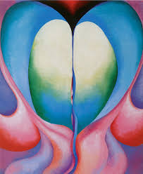

Photographer and art dealer Alfred Stieglitz gave O'Keeffe her first gallery show in 1916 and the couple married in 1924. Considered the "mother of American modernism," O'Keeffe moved to New Mexico after her husband's death and was inspired by the landscape to create numerous well-known paintings.